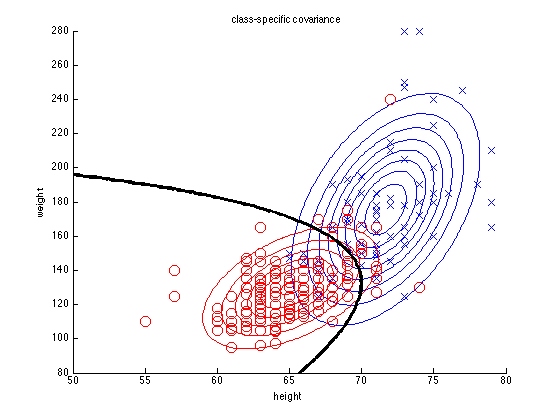
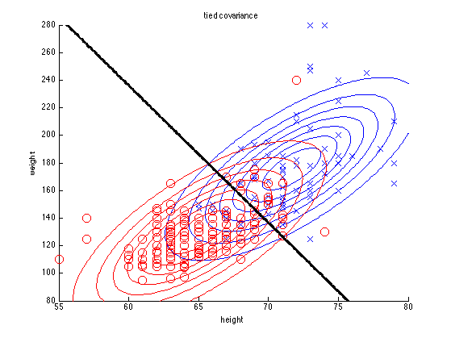

Linear/ quadratic discriminant analysis for Height Weight data
clear all
rawdata = loadData('heightWeight');
data.Y = rawdata(:,1);
data.X = [rawdata(:,2) rawdata(:,3)];
maleNdx = find(data.Y == 1);
femaleNdx = find(data.Y == 2);
classNdx = {maleNdx, femaleNdx};
for tied=[false true]
figure;
colors = 'br';
sym = 'xo';
styles = {'bx', 'ro'};
for c=1:2
X = data.X(classNdx{c},:);
mu{c}= mean(X);
if tied
Sigma{c} = cov(data.X);
else
Sigma{c} = cov(X);
end
str = sprintf('%s%s', sym(c), colors(c));
h=scatter(X(:,1), X(:,2), 100, str);
hold on;
[x,y] = meshgrid(linspace(50,80,100), linspace(80,280,100));
[m,n]=size(x);
X = [reshape(x, n*m, 1) reshape(y, n*m, 1)];
g{c} = reshape(gaussProb(X, mu{c}(:)', Sigma{c}), [m n]);
contour(x,y,g{c}, colors(c));
end
xlabel('height'); ylabel('weight')
for c=1:2
[cc,hh]=contour(x,y,g{1}-g{2},[0 0], '-k');
set(hh,'linewidth',3);
end
if tied
title('tied covariance')
printPmtkFigure(sprintf('heightWeightLDA'))
else
title('class-specific covariance')
printPmtkFigure(sprintf('heightWeightQDA'))
end
end
 